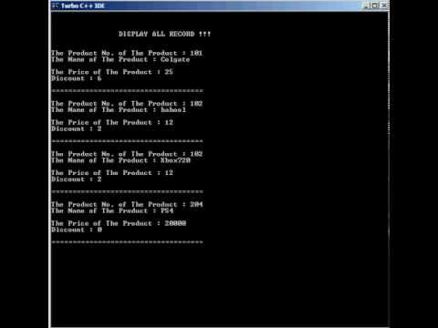

<!DOCTYPE html PUBLIC "-//W3C//DTD XHTML 1.0 Transitional//EN" "http://www.w3.org/TR/xhtml1/DTD/xhtml1-transitional.dtd">
<html xmlns="http://www.w3.org/1999/xhtml">
<head>
<meta http-equiv="Content-Type" content="text/html; charset=iso-8859-1" />
<title>rippedblue - a web template</title>
<link rel="stylesheet" href="styles.css" type="text/css" />
<script type="text/javascript" src="js/jquery-1.2.6.min.js"></script>
<script type="text/javascript" src="js/jquery.flow.1.2.js"></script>
<script type="text/javascript" src="js/jquery.cycle.js"></script>
<script type="text/javascript" src="js/custom.js"></script>

</head>
<body>
	<div id="wrap">
<div id="header">
	<!-- page header - use <span></span> to colour text grey, default color blue -->
	<h1><a href="#">student report<span></span></a></h1>
 <a href="javascript:history.go(-1)" style="display:block;width:115px;height:25px;background:#4E9CAF;padding:10px;text-align:center;border-radius:5px;color:white;font-weight:bold;float:right;">Back To Main Page</a>

		<!-- header search form -->

	<div class="clear"></div>
</div>


<div id="page-title">
	<div id="slides-container">
		<div id="slides">
			<div>

				<div class="slide-image"></div>
				<div class="slide-text">
					<h2>student report</h2>
					<p>Its a program for  student report where you can buy items and it will be added to your basket and total will be given to you</p>

				</div>
			</div>

			<div><div class="slide-image"></div>
							<div class="slide-text">
			<h2></h2>
			<p></p></div></div>
			<div><div class="slide-image"></div>
							<div class="slide-text">
		<h2></h2>
			<p></p></div></div>
		</div>

		<div class="controls"><span class="jFlowNext"><span>Next</span></span><span class="jFlowPrev"><span>Prev</span></span></div>

		<div id="myController" class="hidden"><span class="jFlowControl"></span><span class="jFlowControl"></span><span class="jFlowControl"></span></div>
	</div>


	<div class="clear"></div>
</div>


<div id="content">
	<!-- left hand main content -->
	<div id="page">

		<h2>About The stdent report</h2>
		<p>Suppose you have to develop a program for managing the sales of your tic tac programm. The following functions have been requested by your Head (The shopkeeper):
1: The program should allow the user to select and buy different items present in that shop.
2: The user should be able to see the items that he has bought and print his total bill on the screen
3: The program should not end until the user specifies it to end. (The user should press 'q' to quit the program)</p>

		<pre>
			//***************************************************************
		//                   HEADER FILE USED IN PROJECT
		//****************************************************************

		#include<fstream.h>
		#include<iomanip.h>
		#include<stdio.h>
		#include<conio.h>


		//***************************************************************
		//                   CLASS USED IN PROJECT
		//****************************************************************

		class student
		{
			int rollno;
			char name[50];
			int p_marks, c_marks, m_marks, e_marks, cs_marks;
			float per;
			char grade;
			void calculate();	//function to calculate grade
		public:
			void getdata();	//function to accept data from user
			void showdata();	//function to show data on screen
			void show_tabular();
			int retrollno();
		}; //class ends here


		void student::calculate()
		{
			per=(p_marks+c_marks+m_marks+e_marks+cs_marks)/5.0;
			if(per>=60)
				grade='A';
			else if(per>=50)
				grade='B';
			else if(per>=33)
				grade='C';
			else
				grade='F';
		}

		void student::getdata()
		{
			cout<<"\nEnter The roll number of student ";
			cin>>rollno;
			cout<<"\n\nEnter The Name of student ";
			gets(name);
			cout<<"\nEnter The marks in physics out of 100 : ";
			cin>>p_marks;
			cout<<"\nEnter The marks in chemistry out of 100 : ";
			cin>>c_marks;
			cout<<"\nEnter The marks in maths out of 100 : ";
			cin>>m_marks;
			cout<<"\nEnter The marks in english out of 100 : ";
			cin>>e_marks;
			cout<<"\nEnter The marks in computer science out of 100 : ";
			cin>>cs_marks;
			calculate();
		}

		void student::showdata()
		{
			cout<<"\nRoll number of student : "<<rollno;
			cout<<"\nName of student : "<<name;
			cout<<"\nMarks in Physics : "<<p_marks;
			cout<<"\nMarks in Chemistry : "<<c_marks;
			cout<<"\nMarks in Maths : "<<m_marks;
			cout<<"\nMarks in English : "<<e_marks;
			cout<<"\nMarks in Computer Science :"<<cs_marks;
			cout<<"\nPercentage of student is  :"<<per;
			cout<<"\nGrade of student is :"<<grade;
		}

		void student::show_tabular()
		{
			cout<<rollno<<setw(6)<<" "<<name<<setw(10)<<p_marks<<setw(4)<<c_marks<<setw(4)<<m_marks<<setw(4)<<e_marks<<setw(4)<<cs_marks<<setw(6)<<per<<setw(6)<<" "<<grade<<endl;
		}

		int  student::retrollno()
		{
			return rollno;
		}


		//***************************************************************
		//    	function declaration
		//****************************************************************

		void write_student();	//write the record in binary file
		void display_all();		//read all records from binary file
		void display_sp(int);	//accept rollno and read record from binary file
		void modify_student(int);	//accept rollno and update record of binary file
		void delete_student(int);	//accept rollno and delete selected records from binary file
		void class_result();	//display all records in tabular format from binary file
		void result();	//display result menu
		void intro();	//display welcome screen
		void entry_menu();	//display entry menu on screen


		//***************************************************************
		//    	THE MAIN FUNCTION OF PROGRAM
		//****************************************************************


		int main()
		{
			char ch;
			cout.setf(ios::fixed|ios::showpoint);
			cout<<setprecision(2); // program outputs decimal number to two decimal places
			clrscr();
			intro();
			do
			{
				clrscr();
				cout<<"\n\n\n\tMAIN MENU";
				cout<<"\n\n\t01. RESULT MENU";
				cout<<"\n\n\t02. ENTRY/EDIT MENU";
				cout<<"\n\n\t03. EXIT";
				cout<<"\n\n\tPlease Select Your Option (1-3) ";
				cin>>ch;
				clrscr();
				switch(ch)
				{
					case '1': result();
						break;
					case '2': entry_menu();
						break;
					case '3':
						break;
					default :cout<<"\a";
				}
		    }while(ch!='3');
			return 0;
		}

		//***************************************************************
		//    	function to write in file
		//****************************************************************

		void write_student()
		{
			student st;
			ofstream outFile;
			outFile.open("student.dat",ios::binary|ios::app);
			st.getdata();
			outFile.write((char *) &st, sizeof(student));
			outFile.close();
		    cout<<"\n\nStudent record Has Been Created ";
			cin.ignore();
			getch();
		}

		//***************************************************************
		//    	function to read all records from file
		//****************************************************************

		void display_all()
		{
			student st;
			ifstream inFile;
			inFile.open("student.dat",ios::binary);
			if(!inFile)
			{
				cout<<"File could not be open !! Press any Key...";

				getch();
				return;
			}
			cout<<"\n\n\n\t\tDISPLAY ALL RECORD !!!\n\n";
			while(inFile.read((char *) &st, sizeof(student)))
			{
				st.showdata();
				cout<<"\n\n====================================\n";
			}
			inFile.close();

			getch();
		}

		//***************************************************************
		//    	function to read specific record from file
		//****************************************************************

		void display_sp(int n)
		{
			student st;
			ifstream inFile;
			inFile.open("student.dat",ios::binary);
			if(!inFile)
			{
				cout<<"File could not be open !! Press any Key...";

				getch();
				return;
			}
			int flag=0;
			while(inFile.read((char *) &st, sizeof(student)))
			{
				if(st.retrollno()==n)
				{
					 st.showdata();
					 flag=1;
				}
			}
			inFile.close();
			if(flag==0)
				cout<<"\n\nrecord not exist";

			getch();
		}

		//***************************************************************
		//    	function to modify record of file
		//****************************************************************

		void modify_student(int n)
		{
			int found=0;
			student st;
			fstream File;
			File.open("student.dat",ios::binary|ios::in|ios::out);
			if(!File)
			{
				cout<<"File could not be open !! Press any Key...";

				getch();
				return;
			}

			while(File.read((char *) &st, sizeof(student)) && found==0)
			{
				if(st.retrollno()==n)
				{
					st.showdata();
					cout<<"\n\nPlease Enter The New Details of student"<<endl;
					st.getdata();
				    int pos=(-1)*sizeof(st);
				    File.seekp(pos,ios::cur);
				    File.write((char *) &st, sizeof(student));
				    cout<<"\n\n\t Record Updated";
				    found=1;
				}
			}
			File.close();
			if(found==0)
				cout<<"\n\n Record Not Found ";
			getch();
		}

		//***************************************************************
		//    	function to delete record of file
		//****************************************************************

		void delete_student(int n)
		{
			student st;
			ifstream inFile;
			inFile.open("student.dat",ios::binary);
			if(!inFile)
			{
				cout<<"File could not be open !! Press any Key...";
				getch();
				return;
			}
			ofstream outFile;
			outFile.open("Temp.dat",ios::out);
			inFile.seekg(0,ios::beg);
			while(inFile.read((char *) &st, sizeof(student)))
			{
				if(st.retrollno()!=n)
				{
					outFile.write((char *) &st, sizeof(student));
				}
			}
			outFile.close();
			inFile.close();
			remove("student.dat");
			rename("Temp.dat","student.dat");
			cout<<"\n\n\tRecord Deleted ..";

			getch();
		}

		//***************************************************************
		//    	function to display all students grade report
		//****************************************************************

		void class_result()
		{
			student st;
			ifstream inFile;
			inFile.open("student.dat",ios::binary);
			if(!inFile)
			{
				cout<<"File could not be open !! Press any Key...";

				getch();
				return;
			}
			cout<<"\n\n\t\tALL STUDENTS RESULT \n\n";
			cout<<"==========================================================\n";
			cout<<"R.No       Name        P   C   M   E   CS   %age   Grade"<<endl;
			cout<<"==========================================================\n";
			while(inFile.read((char *) &st, sizeof(student)))
			{
				st.show_tabular();
			}

			getch();
			inFile.close();
		}

		//***************************************************************
		//    	function to display result menu
		//****************************************************************

		void result()
		{
			char ch;
			int rno;
			cout<<"\n\n\n\tRESULT MENU";
			cout<<"\n\n\n\t1. Class Result";
			cout<<"\n\n\t2. Student Report Card";
			cout<<"\n\n\t3. Back to Main Menu";
			cout<<"\n\n\n\tEnter Choice (1/2/3)? ";
			cin>>ch;
			clrscr();
			switch(ch)
			{
			case '1' :	class_result(); break;
			case '2' :	cout<<"\n\n\tEnter Roll Number Of Student : "; cin>>rno;
						display_sp(rno); break;
			case '3' :	break;
			default:	cout<<"\a";
			}
		}

		//***************************************************************
		//    	INTRODUCTION FUNCTION
		//****************************************************************

		void intro()
		{
			cout<<"\n\n\n\t\t  STUDENT";
			cout<<"\n\n\t\tREPORT CARD";
			cout<<"\n\n\t\t  PROJECT";
			cout<<"\n\n\n\tMADE BY : SULABH AGRAWAL";
			cout<<"\n\tSCHOOL : CAMBRIDGE SCHOOL";
			getch();
		}

		//***************************************************************
		//    	ENTRY / EDIT MENU FUNCTION
		//****************************************************************

		void entry_menu()
		{
			char ch;
			int num;
			clrscr();
			cout<<"\n\n\n\tENTRY MENU";
			cout<<"\n\n\t1.CREATE STUDENT RECORD";
			cout<<"\n\n\t2.DISPLAY ALL STUDENTS RECORDS";
			cout<<"\n\n\t3.SEARCH STUDENT RECORD ";
			cout<<"\n\n\t4.MODIFY STUDENT RECORD";
			cout<<"\n\n\t5.DELETE STUDENT RECORD";
			cout<<"\n\n\t6.BACK TO MAIN MENU";
			cout<<"\n\n\tPlease Enter Your Choice (1-6) ";
			cin>>ch;
			clrscr();
			switch(ch)
			{
			case '1':	write_student(); break;
			case '2':	display_all(); break;
			case '3':	cout<<"\n\n\tPlease Enter The roll number "; cin>>num;
						display_sp(num); break;
			case '4':	cout<<"\n\n\tPlease Enter The roll number "; cin>>num;
						modify_student(num);break;
			case '5':	cout<<"\n\n\tPlease Enter The roll number "; cin>>num;
						delete_student(num);break;
			case '6':	break;
			default:	cout<<"\a"; entry_menu();
			}
		}

		//***************************************************************
		//    			END OF PROJECT
		//***************************************************************</pre>


	</div>
	<!-- end left hand main content -->

	<!-- start sidebar -->
	<div id="sidebar">

		<!-- sidebar h3: use <strong> for black text -->
		<h3>Current <strong>Owners</strong></h3>
		<ul class="clientlist">
			<li><a href="#"><h2>abhijit pedhe</h2></a></li>
			<li><a href="#"><h2>abhipedhe97@gmail.com</h2></a></li>
			<li><a href="#"></a></li>
			<li><a href="#"></a></li>
		</ul>
		<br class="clear" />

		<h3>Related <strong>websites</strong></h3>
		<ul>
			<li><a href="#"><h3>github.com</h3></a></li>
			<li><a href="#"><h3>codepen.com</h3></a></li>
		</ul>


	</div>
	<!-- end sidebar -->

	<div class="clear"></div>

</div>
<!-- start footer -->
<div class="footer">
	<p>&copy; 2017 SOP <a href="">Function</a> and <a href="">Stack Of Projects</a><br /><a href="" title="valid XHTML">XHTML</a> | <a href="http://jigsaw.w3.org/css-validator/check/referer" title="valid CSS">CSS</a></p>
</div>
<!-- end footer -->
</div>
	</div>
</body>
</html>
